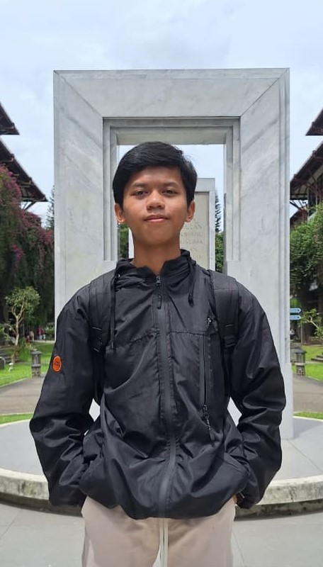

Bidang: Microsoft Office
Pengalaman: 1+ tahun
Mengajarkan penggunaan Office dari dasar hingga mahir dengan metode praktik langsung.
Pengalaman lainnya:
Pengalaman kepanitiaan: - Ketua pelaksana || Manasik Haji & Qurban tahun 2026, Buka Bersama Ekstrakurikuler Study Club tahun 2025 - Divisi Humas || Masa Ta'aruf Murid Madrasah (MATAMUDA) tahun 2026, Buka Bersama Ekstrakurikuler Keagamaan tahun 2025, Meet Up Ekstrakurikuler Study Club tahun 2025, Isra Mi'raj tahun 2024 - Divisi Akodeko || Program Kaderisasi (PROKSI) 2026, Ta'aruf Ekstrakurikuler Keagamaan tahun 2025, Isra Mi'raj tahun 2024 - Divisi Keamanan || Isra Mi'raj tahun 2025, Buka Bersama Ekstrakurikuler Student Computer Community tahun 2025 - Divisi Acara || Maulid Nabi tahun 2025

Materi Office mencakup pembelajaran Microsoft Word, Excel, dan PowerPoint. Siswa akan memahami cara membuat dokumen, mengolah data, serta membuat presentasi yang menarik.